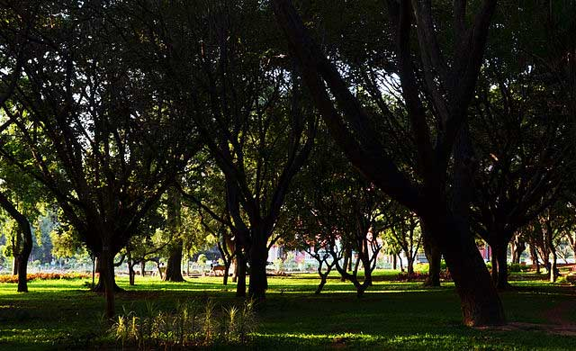
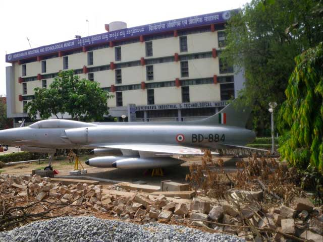

Located in the most crowded market area, Tipu Sultan Fort represents the artistic talent that prevailed in the past. It was originally constructed by Kempe Gowda using mud bricks.It was modified and extended by Haider Ali, who used granite stones in the process.
Since 1791
Place 1
LAL BAGH BOTANICAL GARDEN
BANGLORE (KARNATAKA)
This botanical garden is one of the most beautiful botanical gardens you could find in India. Constructed by Haider Ali, it was later modified by Tipu Sultan. The Glass House in the gardens was inspired by the London Crystal Palace.
SINCE 1960
Place 2
BANGLORE PLACE
BANGLORE (KARNATAKA)
Bangalore Palace was constructed by Chamaraja Wodeyar and he had his inspiration from England’s Windsor Castle. Located at city’s center, the Tudor style construction has Gothic windows, woodcarvings and turrets, which stand proof of the stunning architecture during the period.
Built in 1884
Place 3
NANDI HILLS
BANGLORE (KARNATAKA)
Nandi Hills is a perfect location to feel one with nature. Located 60 kms away from Bangalore, it is one of the hill stations near Bangalore with the solid monolithic granite mass that offers the best view. Rivers Palar and Arkavathi originate from here
By Nature
Place 4
CUBBON PARK
BANGLORE (KARNATAKA)

Cubbon Park is situated in 300 acres of land. It was constructed by Richard Sankey who was the Chief Engineer of Mysore. The massive green parks and the lawns that are well maintained need special mention. The Park offers beautiful walk way.
By nature
Place 5
THE GOVERNMENT MUSEUM
BANGLORE (KARNATAKA)
The museum houses rare collections, which represent various periods. The 18 galleries in the museum have antique jewellery, Neolithic finds of various civilizations and so on. You will find amazing sculptures and old paintings here.
Built in 1886
Place 6
SHIVASSAMUDRAM FALLS
BANGLORE (KARNATAKA)
The place is famous for having Asia’s first hydroelectric power station. If you love trekking, you would not want to miss this place. To reach this falls, you need to trek a distance of 2 kms and you will enjoy the journey that takes you through lush greenery
By Nature
Place 7
VISVASVARAYA INDUSTRIAL AND TECHNICAL MUSEUM
BANGLORE (KARNATAKA)

Located in the surroundings of the beautiful Cubbon Park, the massive building occupies 40000 square feet area. Science lovers will love the museum, which houses artifacts and machines related to telecommunication, engines, aviation, rockets and so on.